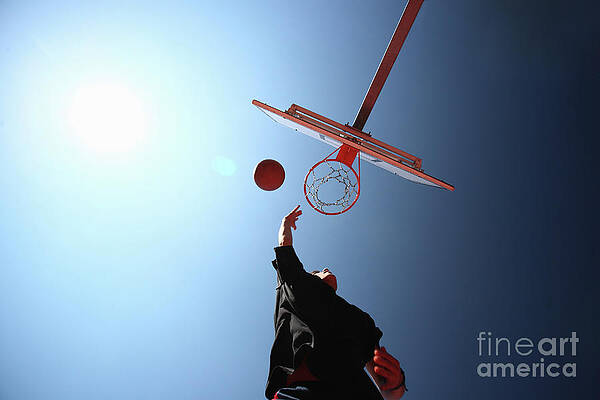
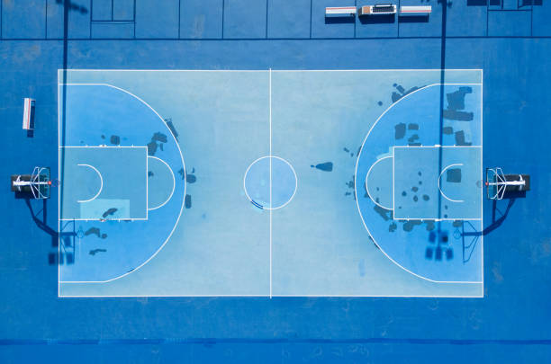
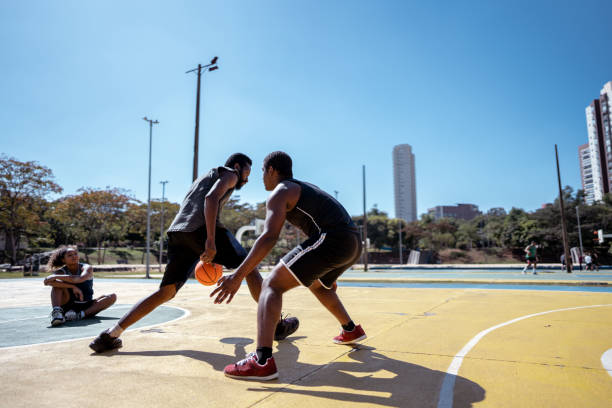

Basketball is one of my favorite hobbies! I enjoy playing it with my friends after school. It’s a fun way to stay active and practice teamwork. Shooting hoops at the park or playing full games always helps me relax and stay energized.
I first started playing basketball when I was around 10 years old. At first, I was just trying to learn the basics like dribbling and shooting. Over time, I began participating in local tournaments and playing with my school team. Each game is exciting and teaches me the importance of strategy, communication, and quick decision-making.
Basketball has many benefits. Physically, it improves stamina, strength, and coordination. Mentally, it teaches focus, patience, and teamwork. Watching professional basketball games is also inspiring because you can learn new techniques and strategies from skilled players.
I particularly enjoy street basketball games because they are casual and fun. Sometimes we play 3-on-3 or free throw contests. The social aspect of basketball is just as important as the sport itself — it allows me to make new friends and spend quality time with my peers.
Overall, basketball is more than a hobby for me; it is a way to stay healthy, challenge myself, and have fun with friends. I hope to continue playing for many years and maybe even coach younger players someday.
  